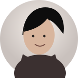

اليوم
جلسة تركيز
ركز الآن 🎓
ابدأ جلسة تركيز جديدة ووصل لأفضل إنجازاتك.
جلسات اليوم
٠
FOCUS TIME
00:00:00
جاهز للبدء؟
❧
▱
▱
▱
╱╱╱
LIVE
يدرسون الآن
حتى لو أخذ الطالب استراحة، يبقى ظاهرًا في الترتيب مع حالته ووقته.
نشاطك اليوم ✦
◷
درست اليوم٠ س ٠ د
▣
جلسات اليوم٠
↗
آخر جلسة—
آخر جلسة
جاهز لجلسة جديدة؟
ابدأ الآن، وسنتذكر تقدمك تلقائياً.
أهدافي ومهامي 🌿
نظم مهامك وحقق أهدافك خطوة بخطوة
▣
٠مكتملةمهام منجزة
٠إجمالي المهامكل المهام
٠المتبقيةمهام متبقية
0%
نسبة الإنجازأنت على الطريق الصحيح!مهامي اليوم
٠ مهام🌱
لا تستسلم!كل مهمة تنجزها تقربك من هدفك ⭐استمر، أنت تقوم بعمل رائع!
✦ ثبّت MILAN على جهازك لتبقى تجربة التركيز أسرع.
00:00:00جلسة مستمرة

المحادثة
غير متصلاليوم
يدرسون الآن LIVE
الطلاب يظلون في الترتيب أثناء الاستراحة، وتظهر حالتهم بوضوح.
الأصدقاء
أضف باليوزر أو بالاسم الكامل المطابق.
اليوزر فريد ولا يتكرر. الاسم يجب أن يطابق الاسم الكامل.
حسابي
غيّر الاسم واليوزر والصورة في أي وقت.
✎
الصورة من الاستديو
MILAN • EXPERIENCE
الإشعارات والتجربة
خلّي MILAN حيّ، ناعم وتفاعلي بدون إزعاج.
✦
🛡️ مانع التطبيقات
اختر التطبيقات التي تريد تذكيرك بالابتعاد عنها أثناء التركيز.
MILAN • ANALYTICS
إحصائياتي
ملخص دراستك وأدائك الدراسي.
اليوم٠ س ٠ د
هذا الأسبوع٠ س ٠ د
الإجمالي٠ س ٠ د
الترتيب#1
نشاط الدراسة